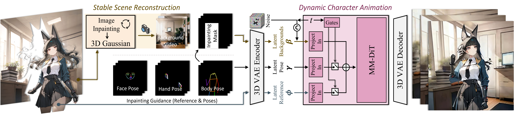
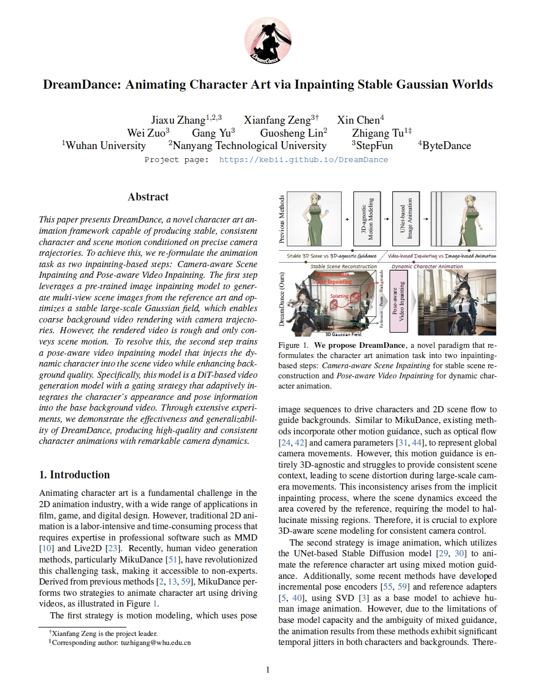

This paper presents DreamDance, a novel character art animation framework capable of producing stable, consistent character and scene motion conditioned on precise camera trajectories. To achieve this, we re-formulate the animation task as two inpainting-based steps: Camera-aware Scene Inpainting and Pose-aware Video Inpainting. The first step leverages a pre-trained image inpainting model to generate multi-view scene images from the reference art and optimizes a stable large-scale Gaussian field, which enables coarse background video rendering with camera trajectories. However, the rendered video is rough and only conveys scene motion. To resolve this, the second step trains a pose-aware video inpainting model that injects the dynamic character into the scene video while enhancing background quality. Specifically, this model is a DiT-based video generation model with a gating strategy that adaptively integrates the character's appearance and pose information into the base background video. Through extensive experiments, we demonstrate the effectiveness and generalizability of DreamDance, producing high-quality and consistent character animations with remarkable camera dynamics.
|
 |
| The reference character art is decomposed into foreground and background layers. The background image is used to reconstruct a stable 3D Gaussian scene through a wrap-and-inpaint scheme, enabling coarse background video rendering based on custom camera trajectories. The gated MM-DiT model then inpaints the background video based on the foreground character and the driving poses, generating dynamic character animations. |
 |
Jiaxu Zhang, Xianfang Zeng, Xin Chen, Wei Zuo, Gang Yu, Guosheng Lin, Zhigang Tu DreamDance: Animating Character Art via Inpainting Stable Gaussian Worlds arXiv:2505.24733, 2025. |
@misc{zhang2025dreamdance,
title={DreamDance: Animating Character Art via Inpainting Stable Gaussian Worlds},
author={Jiaxu Zhang and Xianfang Zeng and Xin Chen and Wei Zuo and Gang Yu and Guosheng Lin and Zhigang Tu},
year={2025},
eprint={2505.24733},
archivePrefix={arXiv},
primaryClass={cs.CV}
}